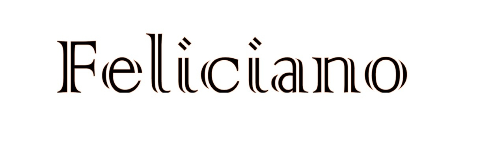
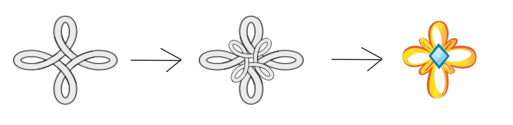
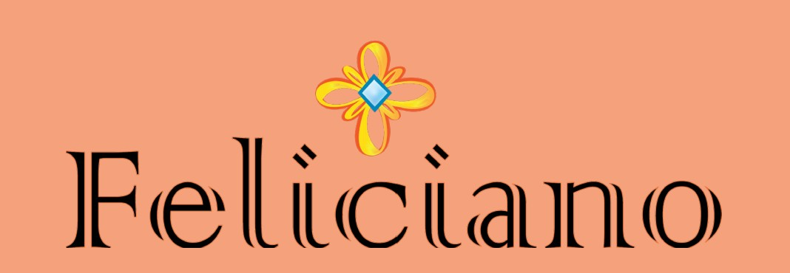
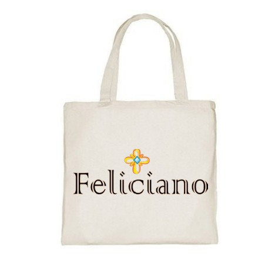
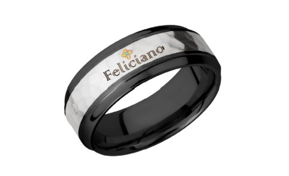
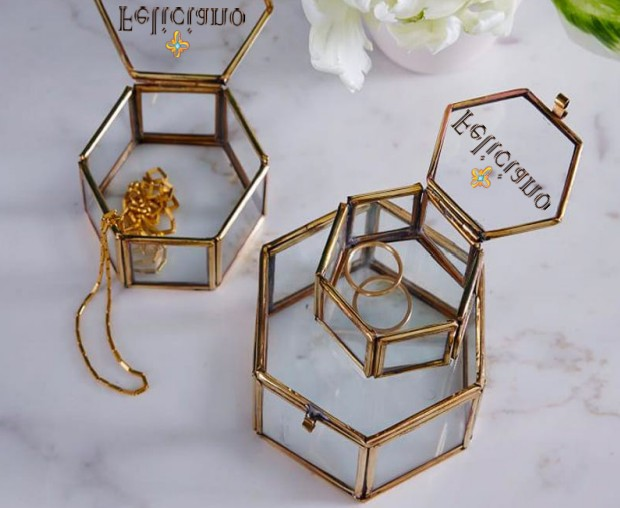
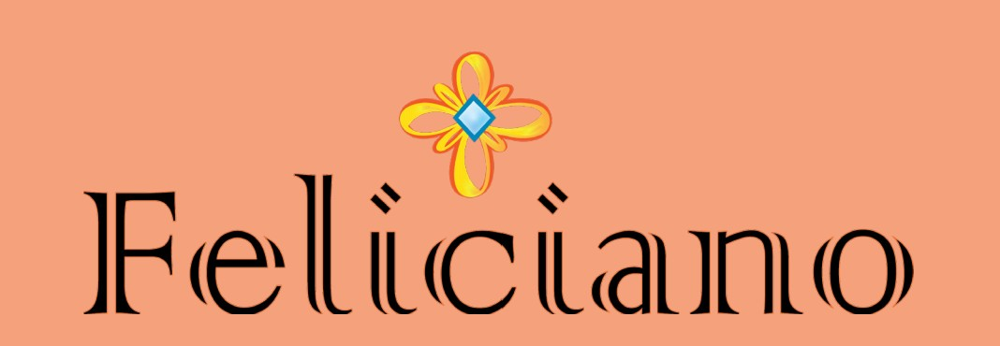
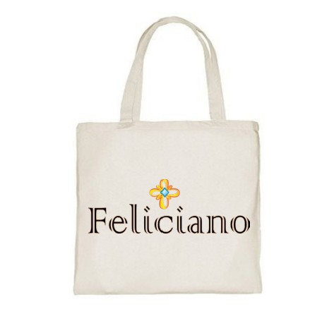
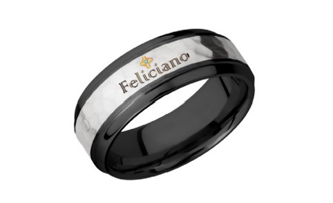
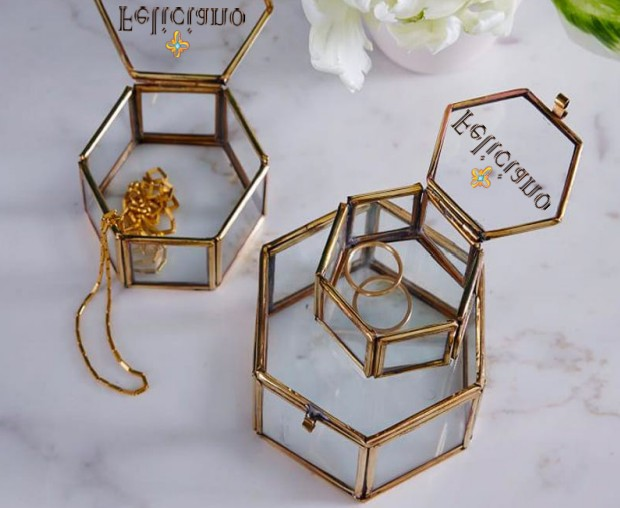

As class project during the Spring 2021 semester, I had to design an original logo for a make-believe client and their business. My chosen client owned a jewelry company, so my objective was to design something that brought significance to the elegant and modern jewelry to be created by my client.

The logo for Feliciano is made up of two important parts.The name itself and the symbol I chose to implement on top of the name. The name Feliciano is an Italian name that means happiness, so they name had to be included for the idea I had.
To give this logo a more elegant but meaningful look, I made use of an Irish Celtic symbol. The Bowen Knot (also known as the Heraldic Knot) is a Celtic symbol that stands for infinity/eternal and love. Gold was specifically chosen for the reason that pure gold does not tarnish. A symbol of eternity that will never tarnish. Not to mention, I designed it as a flower to signify something blooming - a new beginning.
I created a logo for my client that symbolizes eternal happines. That's what their company would bring with every piece of jewelry they make.
 






